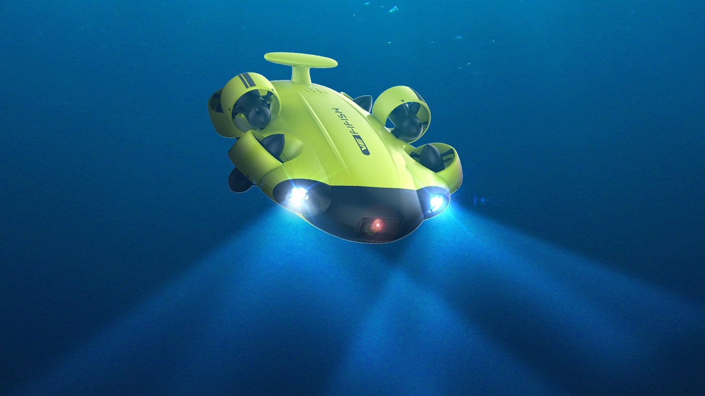
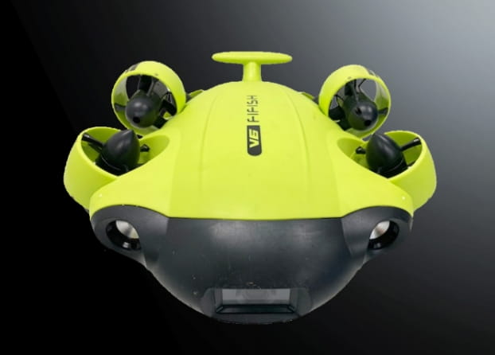

Exploration et technologie aquatique
Un drone aquatique, est un robot télécommandé ou autonome conçu pour évoluer dans l’eau. Plusieurs capacité sont mis en avant tout (exemple)
Il sert à explorer les fonds marins, surveiller l’environnement marin, aider les scientifiques, les plongeurs ou les militaires.
Le but principal d’un drone aquatique est d’assister les humains dans des zones dangereuses, profondes ou difficiles d’accès.
- Réduire les risques humains en mer
- Observer la nature sous-marine sans déranger
- Mener des missions de sauvetage ou de recherche
- Étudier les fonds marins avec précision
Les composants principaux d’un drone aquatique :
| Élément | Modèle utilisé (exemple) |
|---|---|
| Caméra | Sony 4K HDR |
| Propulseurs | 6 hélices brushless étanches |
| Éclairage | LED 2x1500 lumens |
| Batterie | Lithium 9000mAh |
| Coque | Carbone et plastique ABS renforcé |
Les drones sous-marins sont des outils utiles, oins risqués que la plongée humaine, puissants et innovants pour mieux comprendre les océans. Il doit être utilisé avec prudence pour protéger et respecter l'environnement marin et explorer ce que l’homme ne peut atteindre facilement.